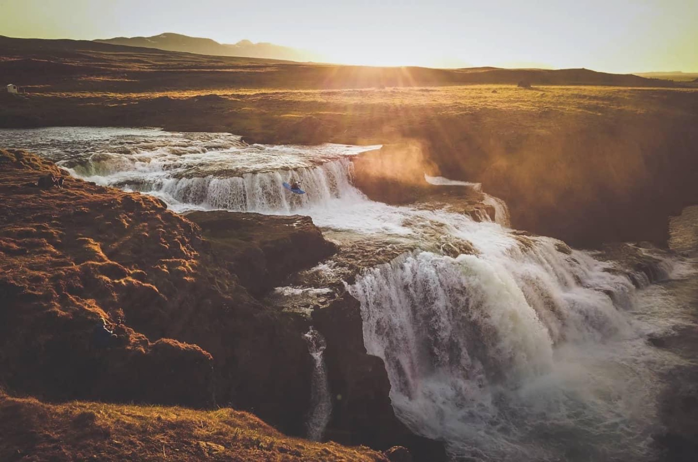
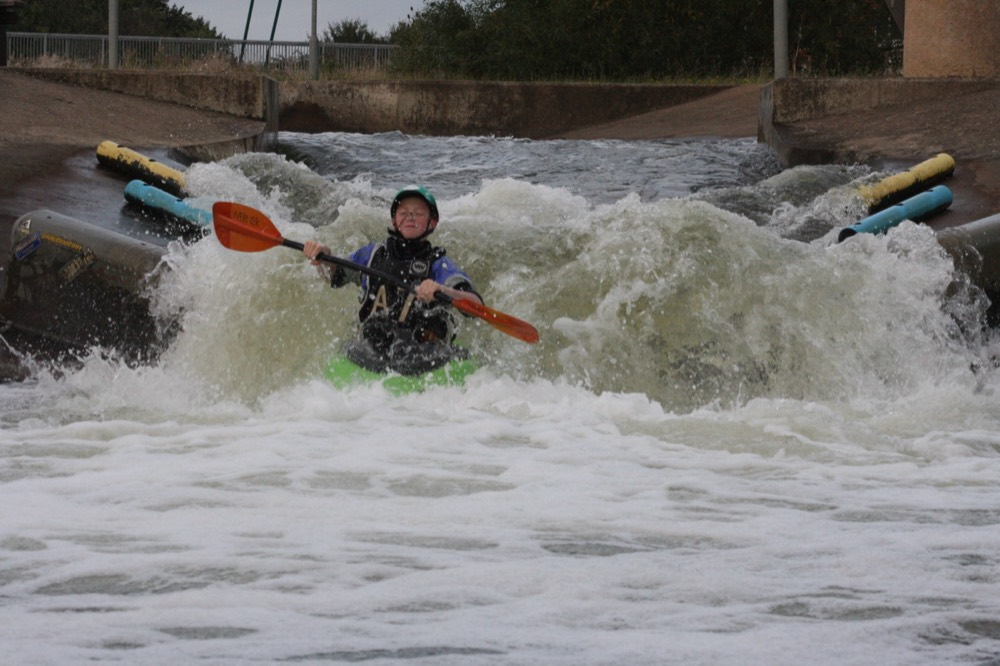
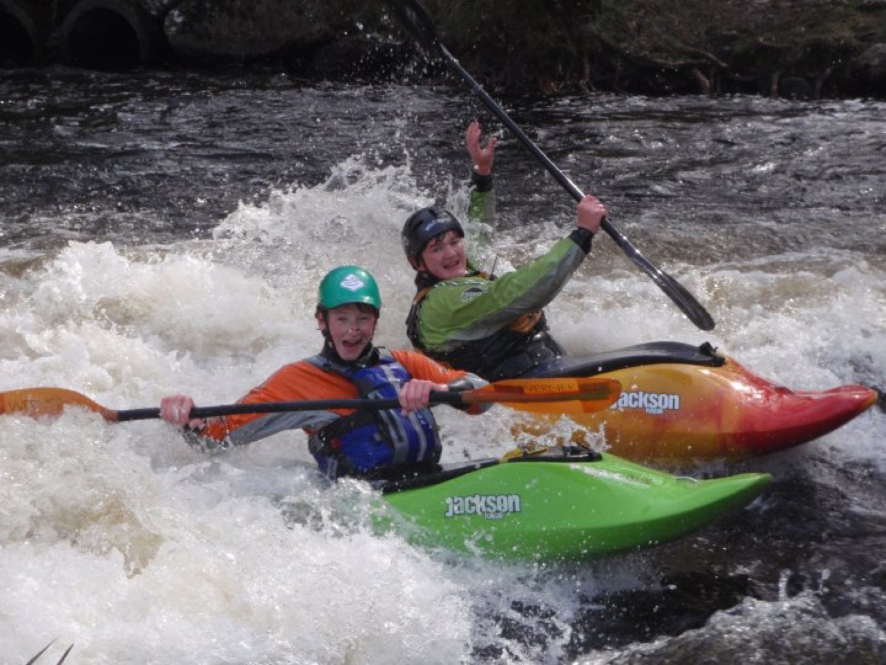
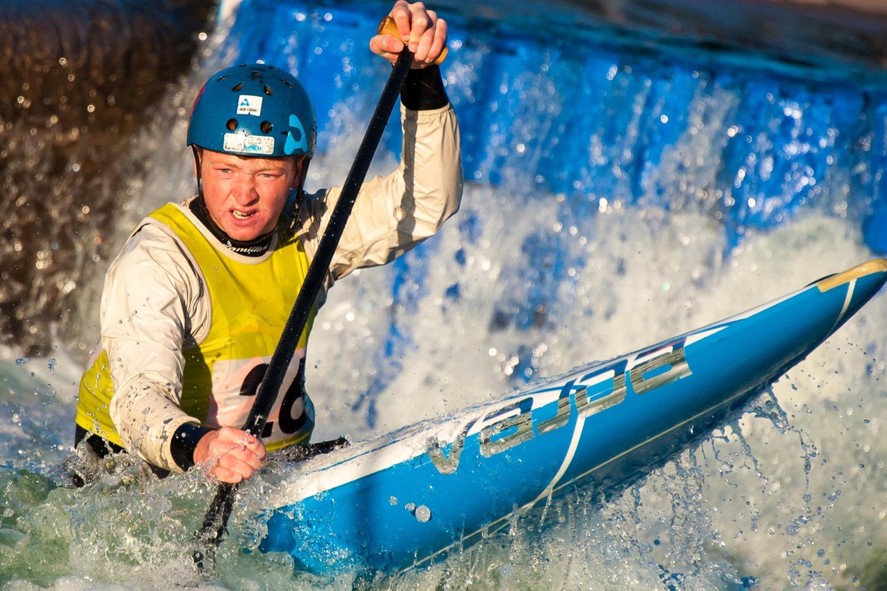
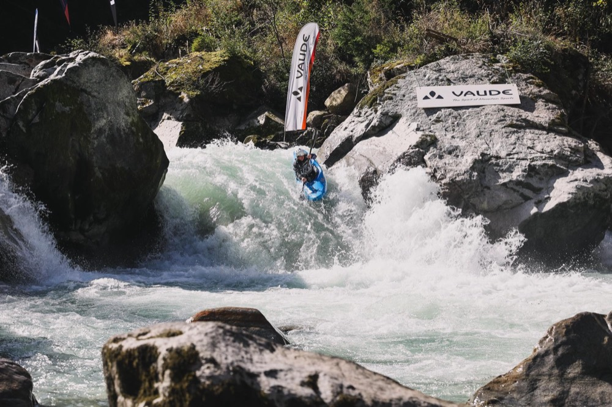
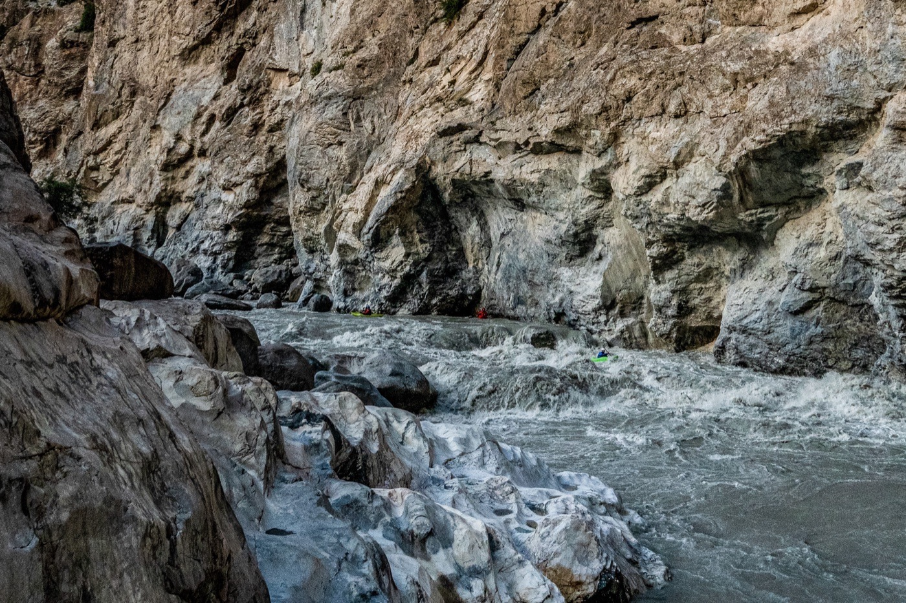
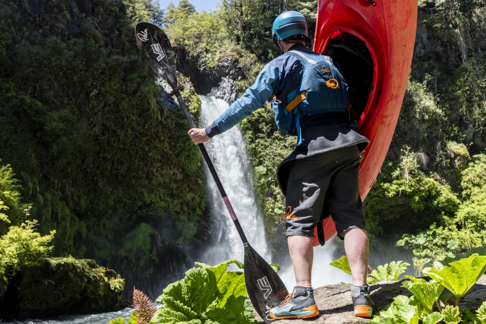
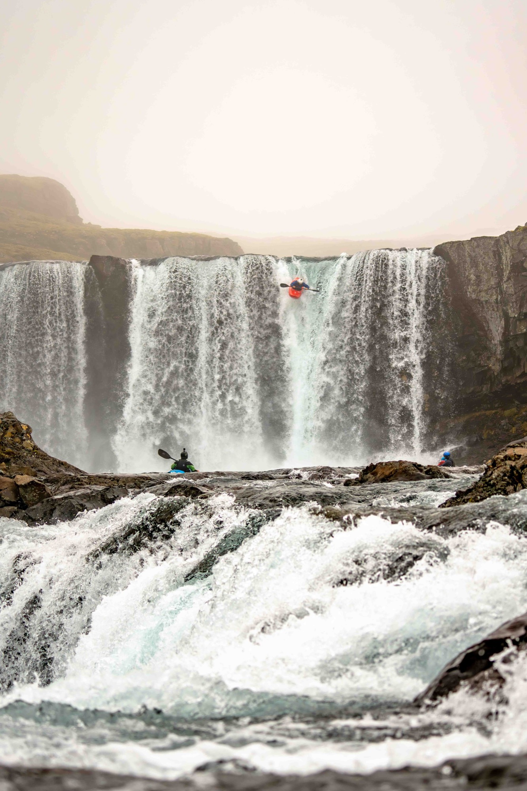

Photo to add
Reading the river
Making clear decisions under pressure when the stakes are real.
The story
Andy Kettlewell is a whitewater kayaker, adventurer and speaker based in Wales. He goes looking for the rivers most people never see: deep canyons in the Tian Shan, thundering waterfalls in Iceland and Chile, and wild water in 28 countries. And wherever he paddles, he brings people with him, sharing the stoke and helping the next generation find their way onto the water.

How the story developed
Age 9–10
Growing up in Bedford, Andy was a footballer first, playing in goal. Then in 2003, aged nine, he joined a six-week beginner course at Viking Kayak Club and took his first strokes on the flat water of the River Great Ouse.
He tried a bit of everything: general purpose boats, canoe polo and playboating. His coaches still remind him how much coaxing it took to get him onto his first small tongue of moving water on a club river trip.

Teenage years
At twelve Andy discovered canoe slalom, and it took over. He stepped away from competitive football to put everything into paddling, training on the slalom course at Cardington and racing for Viking Kayak Club across the country.
Slalom was always the focus, but he explored every side of kayaking he could, including his first taste of river running.
These were also the years he picked up his nickname. It started as Kettlechips, and soon got shortened to Chips, which has stuck ever since.

2012–2014
Andy left home to study sports coaching at university in Cardiff, and kept racing and training slalom the whole way through. Racing in the Premier Division in both kayak and canoe, he focused on developing his skills as an athlete, raced the men's C1 semi-finals at the GB Selection Trials in 2014, and went on to reach the top 10 in the UK in C1 in 2017.
He started giving back too, helping run events for the paddling community. And away from the slalom course, his whitewater skills, and his love of big rivers, kept growing.

Early career
From 2015 to 2019 Andy ran the National Inter-Clubs Slalom Championships, five years in a row. In 2017 he became a slalom coach for Canoe Wales, and in 2022 he stepped up to head coach, working with developing athletes on the world stage, including paddlers who went on to win gold at the U23 World Championships.
At the same time he moved into extreme whitewater racing, taking on the world's best on the Wellerbrücke rapids in Austria at the Adidas Sickline Extreme Kayak World Championships and its successor, the Oetz Trophy.

2022
Andy signed his first sponsorships, with Palm Equipment, Dagger Kayaks and VE Paddles, and joined the team on the Park Jam tour of the UK's whitewater parks.
2023
Andy's first true expedition: leading a team on 12 days of self-supported paddling down the Sary-Jaz in Kyrgyzstan. Grade 5 whitewater in fully loaded boats, deep in the Tian Shan mountains, then an 80km hike out with their kayaks on their backs.
Read more about the expedition
2024
Andy left his role as head coach at Canoe Wales to become a full-time sponsored paddler, with paid partnerships that let him focus on kayaking.
Today he makes films through Pistyll Productions, hosts the YouTube series Coffee with Chips, and keeps exploring: so far that's 28 countries, including the 80-foot Newen waterfall in Chile and remote rivers in Iceland and Norway.


“The river doesn't care about your plan. It rewards how you respond.”

On stage
Andy brings 23 years of whitewater to schools, clubs, events and businesses. His talks draw on racing, coaching and remote expeditions to explore planning, commitment, leading a team when there's no easy way out, and staying calm when it counts.
View speaking topicsSpeaking and workshops
Keynotes for events and conferences, hands-on workshops for teams and clubs, and assemblies for schools. Each one can be shaped to your audience.
Keynotes, workshops and team experiences for schools, clubs, events and businesses, shaped to your audience.